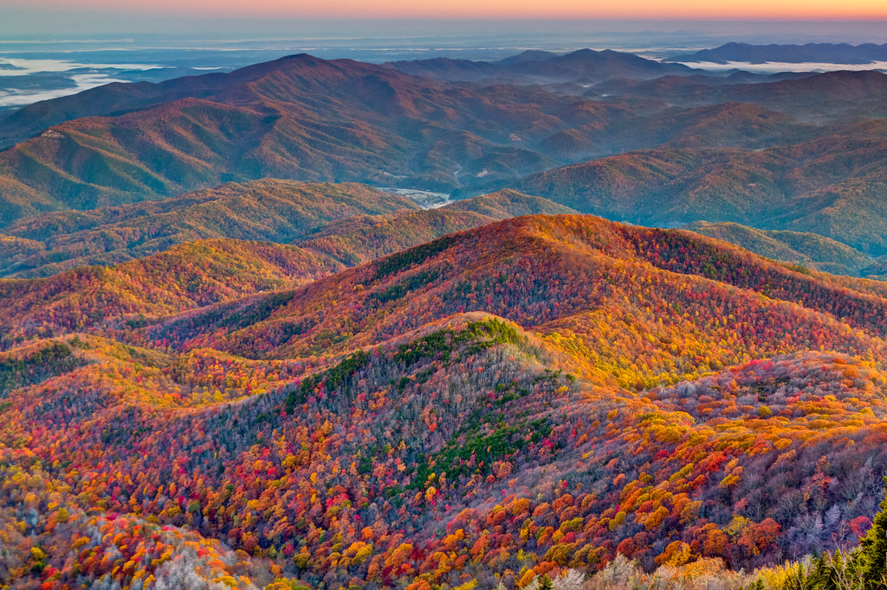

Located on the border between Tennessee and North Carolina, The Great Smoky Mountains form a stunning range known for its mist-covered peaks, diverse wildlife, and dense, lush forests. Its renowned for its biodiversity and offers visitors a captivating blend of natural beauty and outdoor recreational opportunities.